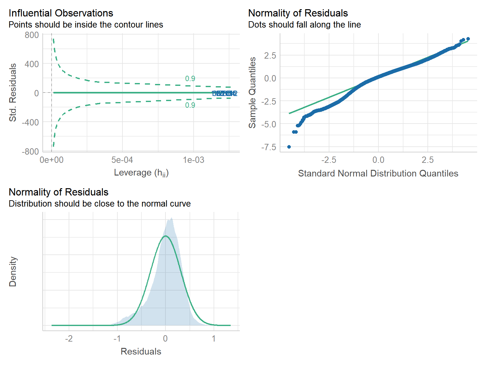

load('./data/cleaned_data.RData')
data_1 = transformed_rental_income %>%
separate(boro_block_lot, into = c("borough", "block", "lot"), sep = "-") %>%
separate(building_classification, into = c("code", "type", "type_1"), sep = "-") %>%
mutate(borough = factor(borough),
neighborhood = factor(neighborhood),
type = factor(type)) ## Warning: Expected 3 pieces. Missing pieces filled with `NA` in 118600 rows [1,
## 2, 3, 4, 5, 6, 7, 8, 9, 10, 11, 12, 13, 14, 15, 16, 17, 18, 19, 20, ...].# make density plots of every variable to check its normality
p1 = data_1 %>%
ggplot(aes(x = latitude)) +
geom_density(aes(y = after_stat(density)),
fill = "#F0E442",
alpha = 0.75,
bins = 10)## Warning in geom_density(aes(y = after_stat(density)), fill = "#F0E442", :
## Ignoring unknown parameters: `bins`p2 = data_1 %>%
ggplot(aes(x = longitude)) +
geom_density(aes(y = after_stat(density)),
fill = "#0072B2",
alpha = 0.75,
bins = 10)## Warning in geom_density(aes(y = after_stat(density)), fill = "#0072B2", :
## Ignoring unknown parameters: `bins`# Logarithmic operation
p3 = data_1 %>%
ggplot(aes(x = log(total_units))) +
geom_density(aes(y = after_stat(density)),
fill = "#CC79A7",
alpha = 0.75,
bins = 10)## Warning in geom_density(aes(y = after_stat(density)), fill = "#CC79A7", :
## Ignoring unknown parameters: `bins`p4 = data_1 %>%
ggplot(aes(x = year_built)) +
geom_density(aes(y = after_stat(density)),
fill = "#D55E00",
alpha = 0.75,
bins = 10)## Warning in geom_density(aes(y = after_stat(density)), fill = "#D55E00", :
## Ignoring unknown parameters: `bins`# Logarithmic operation
p5 = data_1 %>%
ggplot(aes(x = log(gross_sq_ft))) +
geom_density(aes(y = after_stat(density)),
fill = "#56B4E9",
alpha = 0.75,
bins = 10)## Warning in geom_density(aes(y = after_stat(density)), fill = "#56B4E9", :
## Ignoring unknown parameters: `bins`# Logarithmic operation
p6 = data_1 %>%
ggplot(aes(x = log(estimated_gross_income))) +
geom_density(aes(y = after_stat(density)),
fill = "#009E73",
alpha = 0.75,
bins = 10)## Warning in geom_density(aes(y = after_stat(density)), fill = "#009E73", :
## Ignoring unknown parameters: `bins`p1 + p2 + p3 + p4 + p5 + p6 #### log_estimated_gross_income
data_egi = data_1 %>%
mutate(
log_total_units = log(total_units),
log_gross_sq_ft = log(gross_sq_ft),
log_estimated_gross_income = log(estimated_gross_income)
)
# intercept only model
io_eg = lm(log_estimated_gross_income ~ 1, data = data_egi)
# model with all predictors
all_eg = lm(log_estimated_gross_income ~ type
+ borough + log_total_units + year_built + log_gross_sq_ft, data = data_egi)
# stepwise procedure
egi_fit = step(io_eg, direction = "both", scope = formula(all_eg), trace = 0)# formula
equatiomatic::extract_eq(egi_fit, use_coefs = TRUE)\[ \operatorname{\widehat{log\_estimated\_gross\_income}} = 1.91 + 0.97(\operatorname{\log\_gross\_sq\_ft}) - 0.92(\operatorname{borough}_{\operatorname{2}}) - 0.67(\operatorname{borough}_{\operatorname{3}}) - 0.66(\operatorname{borough}_{\operatorname{4}}) - 0.8(\operatorname{borough}_{\operatorname{5}}) + 0(\operatorname{year\_built}) - 0.05(\operatorname{type}_{\operatorname{WALK}}) \]
summary(egi_fit)##
## Call:
## lm(formula = log_estimated_gross_income ~ log_gross_sq_ft + borough +
## year_built + type, data = data_egi)
##
## Residuals:
## Min 1Q Median 3Q Max
## -2.36175 -0.15713 0.04168 0.21293 1.35025
##
## Coefficients:
## Estimate Std. Error t value Pr(>|t|)
## (Intercept) 1.9139438 0.0723038 26.47 <2e-16 ***
## log_gross_sq_ft 0.9731798 0.0010714 908.32 <2e-16 ***
## borough2 -0.9160340 0.0027887 -328.48 <2e-16 ***
## borough3 -0.6697263 0.0021139 -316.82 <2e-16 ***
## borough4 -0.6618684 0.0021507 -307.74 <2e-16 ***
## borough5 -0.7969028 0.0108752 -73.28 <2e-16 ***
## year_built 0.0009892 0.0000391 25.30 <2e-16 ***
## typeWALK -0.0485254 0.0021991 -22.07 <2e-16 ***
## ---
## Signif. codes: 0 '***' 0.001 '**' 0.01 '*' 0.05 '.' 0.1 ' ' 1
##
## Residual standard error: 0.3145 on 170955 degrees of freedom
## Multiple R-squared: 0.9162, Adjusted R-squared: 0.9162
## F-statistic: 2.67e+05 on 7 and 170955 DF, p-value: < 2.2e-16# check the model
performance::check_model(egi_fit)
## estimated_gross_income
data_egi_nl = data_1 %>%
mutate(
log_total_units = log(total_units),
log_gross_sq_ft = log(gross_sq_ft),
log_estimated_gross_income = log(estimated_gross_income)
)
# intercept only model
io_eg_nl = lm(estimated_gross_income ~ 1, data = data_egi_nl)
# model with all predictors
all_eg_nl = lm(estimated_gross_income ~ type
+ borough + log_total_units + year_built + log_gross_sq_ft, data = data_egi_nl)
# stepwise procedure
egi_fit_nl = step(io_eg_nl, direction = "both", scope = formula(all_eg_nl), trace = 0)# formula
equatiomatic::extract_eq(egi_fit_nl, use_coefs = TRUE)\[ \operatorname{\widehat{estimated\_gross\_income}} = -49367301.95 + 2737644.66(\operatorname{\log\_gross\_sq\_ft}) - 2648037.47(\operatorname{borough}_{\operatorname{2}}) - 2020767.65(\operatorname{borough}_{\operatorname{3}}) - 2861723.12(\operatorname{borough}_{\operatorname{4}}) - 2600281.36(\operatorname{borough}_{\operatorname{5}}) + 2285628.64(\operatorname{type}_{\operatorname{WALK}}) + 10899.35(\operatorname{year\_built}) + 377790.32(\operatorname{\log\_total\_units}) \]
summary(egi_fit_nl)##
## Call:
## lm(formula = estimated_gross_income ~ log_gross_sq_ft + borough +
## type + year_built + log_total_units, data = data_egi_nl)
##
## Residuals:
## Min 1Q Median 3Q Max
## -5998636 -1112875 -245646 693082 200358040
##
## Coefficients:
## Estimate Std. Error t value Pr(>|t|)
## (Intercept) -4.937e+07 7.126e+05 -69.28 <2e-16 ***
## log_gross_sq_ft 2.738e+06 1.986e+04 137.85 <2e-16 ***
## borough2 -2.648e+06 2.588e+04 -102.34 <2e-16 ***
## borough3 -2.021e+06 1.961e+04 -103.06 <2e-16 ***
## borough4 -2.862e+06 1.998e+04 -143.24 <2e-16 ***
## borough5 -2.600e+06 1.008e+05 -25.79 <2e-16 ***
## typeWALK 2.286e+06 2.056e+04 111.17 <2e-16 ***
## year_built 1.090e+04 3.699e+02 29.46 <2e-16 ***
## log_total_units 3.778e+05 2.220e+04 17.02 <2e-16 ***
## ---
## Signif. codes: 0 '***' 0.001 '**' 0.01 '*' 0.05 '.' 0.1 ' ' 1
##
## Residual standard error: 2915000 on 170954 degrees of freedom
## Multiple R-squared: 0.4654, Adjusted R-squared: 0.4653
## F-statistic: 1.86e+04 on 8 and 170954 DF, p-value: < 2.2e-16# check the model
performance::check_model(egi_fit_nl)pred_df = data_egi_nl %>%
modelr::add_predictions(model = egi_fit_nl)
latitude = pred_df$latitude
longitude = pred_df$longitude
pred_Y = pred_df$pred
loess_val = loess(pred_Y ~ latitude + longitude)
loess_val## Call:
## loess(formula = pred_Y ~ latitude + longitude)
##
## Number of Observations: 170963
## Equivalent Number of Parameters: 10.38
## Residual Standard Error: 2600000?loess()## 打开httpd帮助服务器… 好了edit(loess)## function (formula, data, weights, subset, na.action, model = FALSE,
## span = 0.75, enp.target, degree = 2L, parametric = FALSE,
## drop.square = FALSE, normalize = TRUE, family = c("gaussian",
## "symmetric"), method = c("loess", "model.frame"), control = loess.control(...),
## ...)
## {
## family <- match.arg(family)
## method <- match.arg(method)
## mf <- match.call(expand.dots = FALSE)
## mf$model <- mf$span <- mf$enp.target <- mf$degree <- mf$parametric <- mf$drop.square <- mf$normalize <- mf$family <- mf$method <- mf$control <- mf$... <- NULL
## mf[[1L]] <- quote(stats::model.frame)
## mf <- eval(mf, parent.frame())
## if (match.arg(method) == "model.frame")
## return(mf)
## mt <- attr(mf, "terms")
## y <- model.response(mf, "numeric")
## w <- model.weights(mf) %||% rep_len(1, length(y))
## nmx <- as.character(attr(mt, "variables"))[-(1L:2)]
## x <- mf[, nmx, drop = FALSE]
## if (any(sapply(x, is.factor)))
## stop("predictors must all be numeric")
## x <- as.matrix(x)
## D <- ncol(x)
## nmx <- setNames(nm = colnames(x))
## drop.square <- match(nmx, nmx[drop.square], 0L) > 0L
## parametric <- match(nmx, nmx[parametric], 0L) > 0L
## if (!match(degree, 0L:2L, 0L))
## stop("'degree' must be 0, 1 or 2")
## iterations <- if (family == "gaussian")
## 1L
## else control$iterations
## if (!missing(enp.target))
## if (!missing(span))
## warning("both 'span' and 'enp.target' specified: 'span' will be used")
## else {
## tau <- switch(degree + 1L, 1, D + 1, (D + 1) * (D +
## 2)/2) - sum(drop.square)
## span <- 1.2 * tau/enp.target
## }
## if (!is.list(control) || !is.character(control$surface) ||
## !is.character(control$statistics) || !is.character(control$trace.hat) ||
## !is.numeric(control$cell) || !is.numeric(iterations))
## stop("invalid 'control' argument")
## fit <- simpleLoess(y, x, w, span, degree = degree, parametric = parametric,
## drop.square = drop.square, normalize = normalize, statistics = control$statistics,
## surface = control$surface, cell = control$cell, iterations = iterations,
## iterTrace = control$iterTrace, trace.hat = control$trace.hat)
## fit$call <- match.call()
## fit$terms <- mt
## fit$xnames <- nmx
## fit$x <- x
## fit$y <- y
## fit$weights <- w
## if (model)
## fit$model <- mf
## fit$na.action <- attr(mf, "na.action")
## fit
## }
## <environment: namespace:stats>